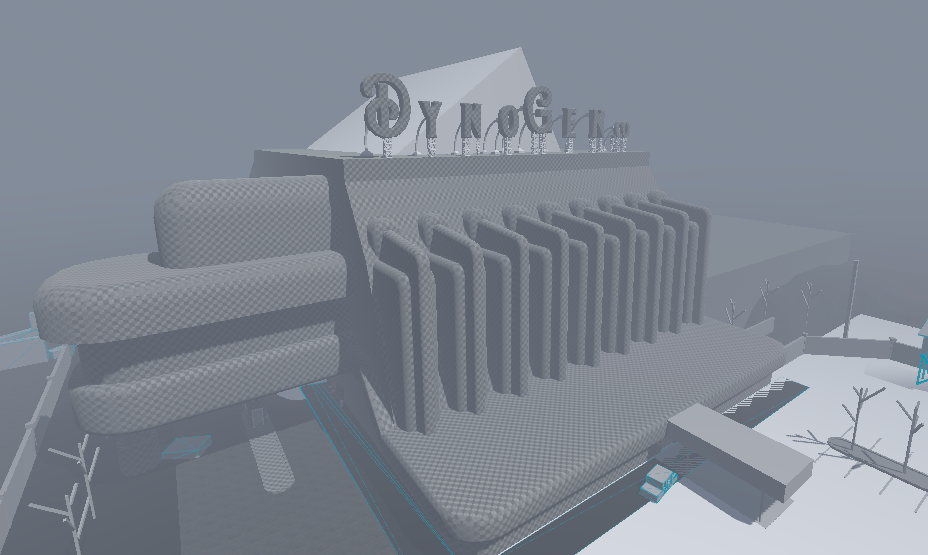
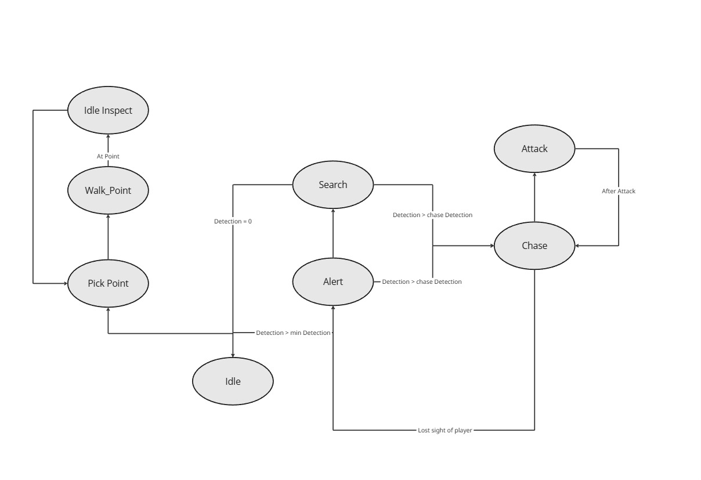
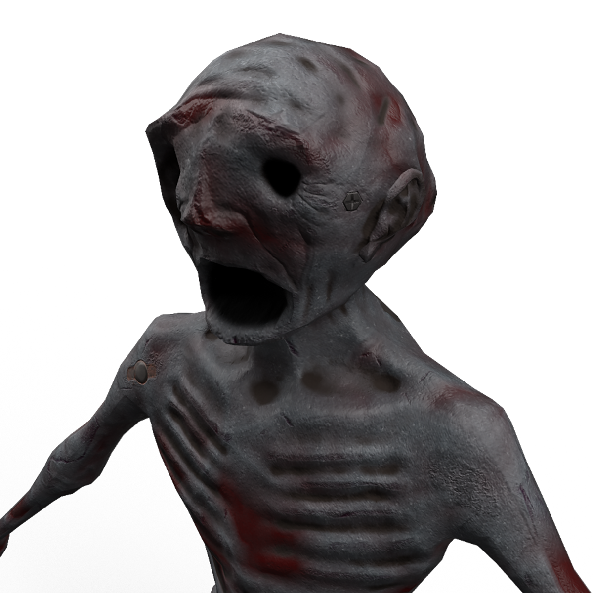
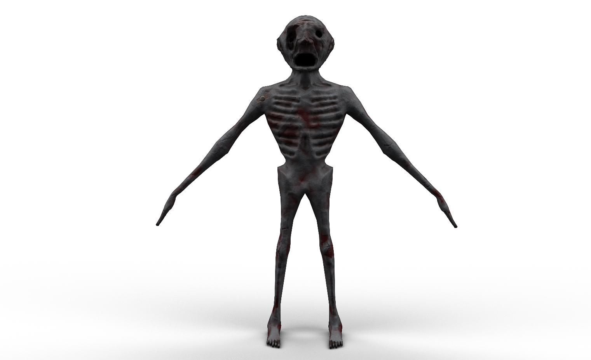
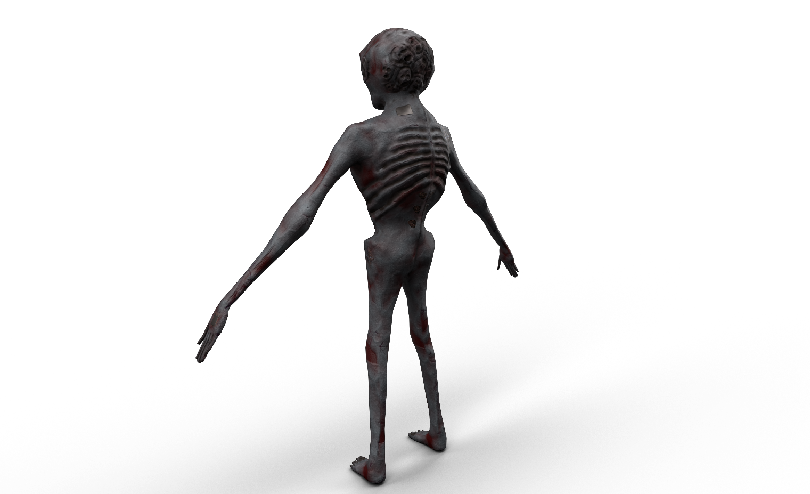
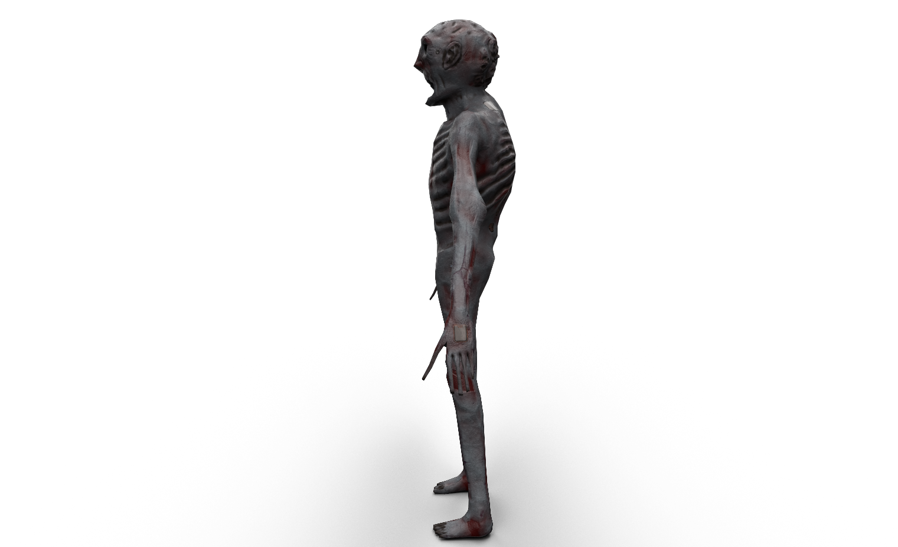
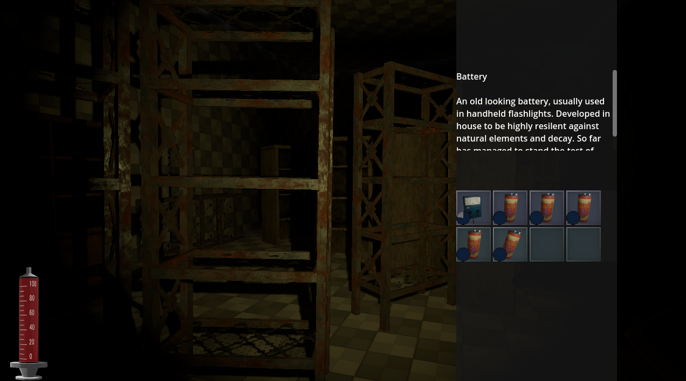

Owen Spreadbury
Paranormal Factory
Patient R-21
Design Week
3D Art
Under Construction
Paranormal Factory

This is my largest project in Godot Engine. It contains programming, 3D art, and both level/gameplay design.
Karl
This is Karl, one of the primary enemies of the game.
Karl is a 3D Model created in Blender and textured in substance painter.
Karl is an NPC that wanders through levels, antagonizing the player.
AI

Karl's AI has a few states attributed to him. These states are broken into seperate categories.
The main plan was that he would randomly pick particular spots, inspect them, and move to another. Then, if he were to see a player, he would stop and look around. If the player is seen enough, he will come over to investigate. If the player is seen further still, he would chase them until he is close enough to attack.
The only way the player can escape is to stay out of his sight for a long enough period of time.
Model




Inventory

The player's inventory is a simple grid with an item in each slot. The player can drop, use or combine items inside the inventory.
Every item has their own description which can be used to help solve puzzles, explain the item's usage or add lore and worldbuilding.
Multimesh Vegetation
When creating the forest outside of the large office complex, I needed to be able to create lots of trees without destroying the game's performance.
So I created a script that utilizes the MultiMesh node in Godot. The script randomly places trees and inserts them into the ground.
Grabbing Objects
A fun mechanic I implemented in the game is the act of grabbing objects physically. Players can grab, rotate and throw objects. This can be used to solve puzzles or for some simple fun with physics.